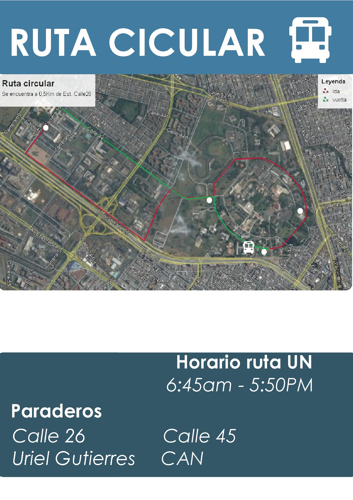

SISTEMA INFORMATIVO DE TRANSPORTE U.N.
El servicio de la ruta circular cuenta actualmente con 1 bus, con capacidad para 50 personas, para hacer uso
de este servicio no se requiere registro por parte del usuario, el bus transita de 6:45 am a 5:50 pm y los paraderos son los siguientes:
CALLE 26
CALLE 45
CAN
URIEL GUTIERRES
Actualmente esta es la ubicación del bus:
